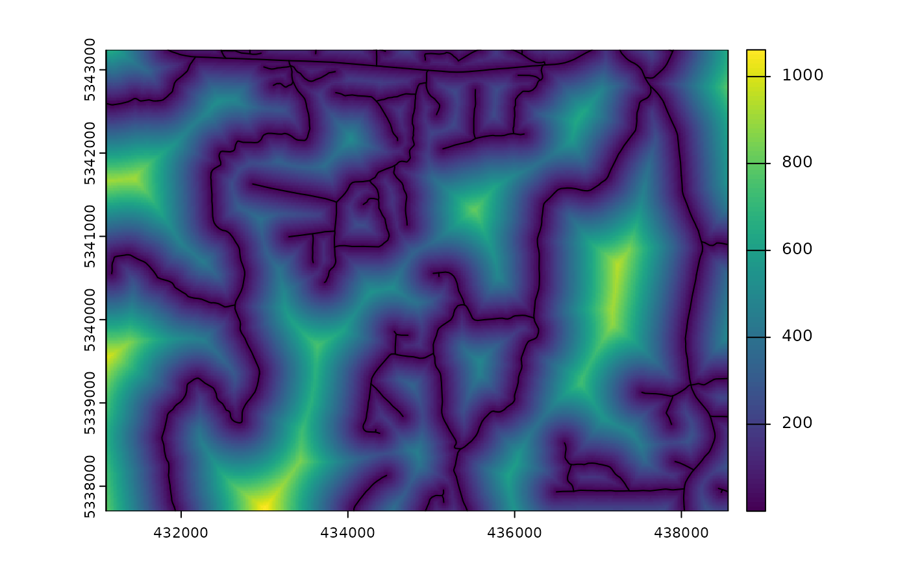
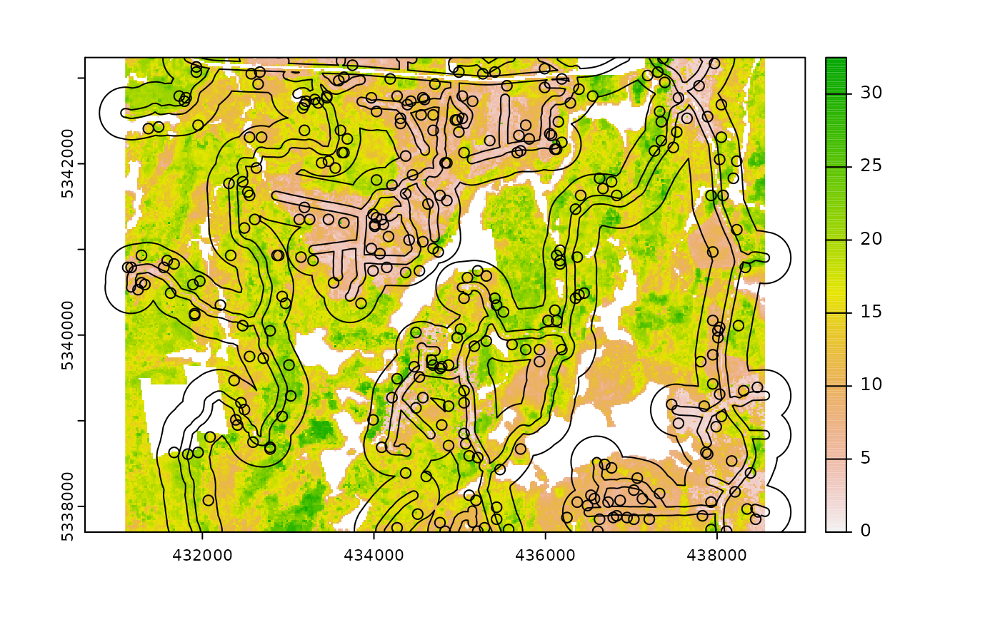

Currently, there are 9 functions associated with the
sample verb in the sgsR package:
| Algorithm | Description | Reference |
|---|---|---|
sample_srs() |
Simple random | |
sample_systematic() |
Systematic | |
sample_strat() |
Stratified | Queinnec, White, & Coops (2021) |
sample_sys_strat() |
Systematic Stratified | |
sample_nc() |
Nearest centroid | Melville & Stone (2016) |
sample_clhs() |
Conditioned Latin hypercube | Minasny & McBratney (2006) |
sample_balanced() |
Balanced sampling | Grafström, A. Lisic, J (2018) |
sample_ahels() |
Adapted hypercube evaluation of a legacy sample | Malone, Minasny, & Brungard (2019) |
sample_existing() |
Sub-sampling an existing sample |
sample_srs
We have demonstrated a simple example of using the
sample_srs() function in vignette("sgsR"). We
will demonstrate additional examples below.
raster
The input required for sample_srs() is a
raster. This means that sraster and
mraster are supported for this function.
#--- perform simple random sampling ---#
sample_srs(raster = sraster, # input sraster
nSamp = 200, # number of desired sample units
plot = TRUE) # plot
#> Simple feature collection with 200 features and 0 fields
#> Geometry type: POINT
#> Dimension: XY
#> Bounding box: xmin: 431190 ymin: 5337710 xmax: 438490 ymax: 5343230
#> CRS: +proj=utm +zone=17 +ellps=GRS80 +towgs84=0,0,0,0,0,0,0 +units=m +no_defs
#> First 10 features:
#> geometry
#> 1 POINT (438410 5342690)
#> 2 POINT (433810 5339970)
#> 3 POINT (433870 5341870)
#> 4 POINT (431690 5340650)
#> 5 POINT (437470 5339790)
#> 6 POINT (433790 5342570)
#> 7 POINT (437110 5338050)
#> 8 POINT (431730 5341450)
#> 9 POINT (437110 5338090)
#> 10 POINT (433810 5340290)
sample_srs(raster = mraster, # input mraster
nSamp = 200, # number of desired sample units
access = access, # define access road network
mindist = 200, # minimum distance sample units must be apart from one another
buff_inner = 50, # inner buffer - no sample units within this distance from road
buff_outer = 200, # outer buffer - no sample units further than this distance from road
plot = TRUE) # plot
#> Simple feature collection with 200 features and 0 fields
#> Geometry type: POINT
#> Dimension: XY
#> Bounding box: xmin: 431130 ymin: 5337710 xmax: 438510 ymax: 5343190
#> CRS: +proj=utm +zone=17 +ellps=GRS80 +towgs84=0,0,0,0,0,0,0 +units=m +no_defs
#> First 10 features:
#> geometry
#> 1 POINT (435230 5338990)
#> 2 POINT (435070 5340730)
#> 3 POINT (436430 5340770)
#> 4 POINT (437950 5340070)
#> 5 POINT (437550 5339230)
#> 6 POINT (433010 5341810)
#> 7 POINT (438490 5338510)
#> 8 POINT (438490 5338150)
#> 9 POINT (433650 5341150)
#> 10 POINT (435010 5342010)
sample_systematic
The sample_systematic() function applies systematic
sampling across an area with the cellsize parameter
defining the resolution of the tessellation. The tessellation shape can
be modified using the square parameter. Assigning
TRUE (default) to the square parameter results
in a regular grid and assigning FALSE results in a
hexagonal grid.
The location of sample units can also be adjusted using the
locations parameter, where centers takes the
center, corners takes all corners, and random
takes a random location within each tessellation. Random start points
and translations are applied when the function is called.
#--- perform grid sampling ---#
sample_systematic(raster = sraster, # input sraster
cellsize = 1000, # grid distance
plot = TRUE) # plot
#> Simple feature collection with 32 features and 0 fields
#> Geometry type: POINT
#> Dimension: XY
#> Bounding box: xmin: 431274.2 ymin: 5337755 xmax: 438520.4 ymax: 5343140
#> CRS: +proj=utm +zone=17 +ellps=GRS80 +towgs84=0,0,0,0,0,0,0 +units=m +no_defs
#> First 10 features:
#> geometry
#> 1 POINT (438322.3 5342042)
#> 2 POINT (437391.8 5342408)
#> 3 POINT (436461.3 5342774)
#> 4 POINT (435530.8 5343140)
#> 5 POINT (437956.1 5341111)
#> 6 POINT (437025.6 5341477)
#> 7 POINT (435164.5 5342210)
#> 8 POINT (434234 5342576)
#> 9 POINT (433303.5 5342942)
#> 10 POINT (438520.4 5339814)
#--- perform grid sampling ---#
sample_systematic(raster = sraster, # input sraster
cellsize = 500, # grid distance
square = FALSE, # hexagonal tessellation
location = "random", # randomly sample within tessellation
plot = TRUE) # plot
#> Simple feature collection with 166 features and 0 fields
#> Geometry type: POINT
#> Dimension: XY
#> Bounding box: xmin: 431126.3 ymin: 5337760 xmax: 438462.7 ymax: 5343181
#> CRS: +proj=utm +zone=17 +ellps=GRS80 +towgs84=0,0,0,0,0,0,0 +units=m +no_defs
#> First 10 features:
#> geometry
#> 1 POINT (431226.4 5338161)
#> 2 POINT (431693.3 5337946)
#> 3 POINT (431498.5 5338577)
#> 4 POINT (431218 5339377)
#> 5 POINT (431626.8 5338242)
#> 6 POINT (431126.3 5339699)
#> 7 POINT (431166.1 5340730)
#> 8 POINT (432171.6 5337983)
#> 9 POINT (431388.1 5340579)
#> 10 POINT (431241.3 5341142)
sample_systematic(raster = sraster, # input sraster
cellsize = 500, # grid distance
access = access, # define access road network
buff_outer = 200, # outer buffer - no sample units further than this distance from road
square = FALSE, # hexagonal tessellation
location = "corners", # take corners instead of centers
plot = TRUE)
#> Simple feature collection with 611 features and 0 fields
#> Geometry type: POINT
#> Dimension: XY
#> Bounding box: xmin: 431259.9 ymin: 5337763 xmax: 438371.7 ymax: 5343234
#> CRS: +proj=utm +zone=17 +ellps=GRS80 +towgs84=0,0,0,0,0,0,0 +units=m +no_defs
#> First 10 features:
#> geometry
#> 1 POINT (437782.8 5343051)
#> 2 POINT (437782.8 5343051)
#> 3 POINT (437519.6 5342932)
#> 4 POINT (437285.4 5343101)
#> 5 POINT (437988.1 5342595)
#> 6 POINT (437285.4 5343101)
#> 7 POINT (437519.6 5342932)
#> 8 POINT (437782.8 5343051)
#> 9 POINT (437988.1 5342595)
#> 10 POINT (437724.8 5342476)
sample_strat
The sample_strat() contains two methods to
perform sampling:
"Queinnec"- Hierarchical sampling using a focal window to isolate contiguous groups of stratum pixels, which was originally developed by Martin Queinnec."random"- Traditional stratified random sampling. Thismethodignores much of the functionality of the algorithm to allow users the capability to use standard stratified random sampling approaches without the use of a focal window to locate contiguous stratum cells.
method = "Queinnec"
Queinnec, M., White, J. C., & Coops, N. C. (2021). Comparing airborne and spaceborne photon-counting LiDAR canopy structural estimates across different boreal forest types. Remote Sensing of Environment, 262(August 2020), 112510.
This algorithm uses moving window (wrow and
wcol parameters) to filter the input sraster
to prioritize sample unit allocation to where stratum pixels are
spatially grouped, rather than dispersed individuals across the
landscape.
Sampling is performed using 2 rules:
Rule 1 - Sample within spatially grouped stratum pixels. Moving window defined by
wrowandwcol.Rule 2 - If no additional sample units exist to satisfy desired sample size(
nSamp), individual stratum pixels are sampled.
The rule applied to a select each sample unit is defined in the
rule attribute of output samples. We give a few examples
below:
#--- perform stratified sampling random sampling ---#
sample_strat(sraster = sraster, # input sraster
nSamp = 200) # desired sample size # plot
#> Simple feature collection with 200 features and 3 fields
#> Geometry type: POINT
#> Dimension: XY
#> Bounding box: xmin: 431110 ymin: 5337790 xmax: 438550 ymax: 5343230
#> CRS: NA
#> First 10 features:
#> strata type rule geometry
#> x 1 new rule1 POINT (433550 5340530)
#> x1 1 new rule2 POINT (436130 5337790)
#> x2 1 new rule2 POINT (435990 5342290)
#> x3 1 new rule2 POINT (438470 5338990)
#> x4 1 new rule2 POINT (438270 5342090)
#> x5 1 new rule2 POINT (435230 5342430)
#> x6 1 new rule2 POINT (432270 5343230)
#> x7 1 new rule2 POINT (436530 5338090)
#> x8 1 new rule2 POINT (435870 5343190)
#> x9 1 new rule2 POINT (432490 5342790)In some cases, users might want to include an existing
sample within the algorithm. In order to adjust the total number of
sample units needed per stratum to reflect those already present in
existing, we can use the intermediate function
extract_strata().
This function uses the sraster and existing
sample units and extracts the stratum for each. These sample units can
be included within sample_strat(), which adjusts total
sample units required per class based on representation in
existing.
#--- extract strata values to existing samples ---#
e.sr <- extract_strata(sraster = sraster, # input sraster
existing = existing) # existing samples to add strata value toTIP!
sample_strat() requires the sraster input
to have an attribute named strata and will give an error if
it doesn’t.
sample_strat(sraster = sraster, # input sraster
nSamp = 200, # desired sample size
access = access, # define access road network
existing = e.sr, # existing sample with strata values
mindist = 200, # minimum distance sample units must be apart from one another
buff_inner = 50, # inner buffer - no sample units within this distance from road
buff_outer = 200, # outer buffer - no sample units further than this distance from road
plot = TRUE) # plot
#> Simple feature collection with 400 features and 3 fields
#> Geometry type: POINT
#> Dimension: XY
#> Bounding box: xmin: 431110 ymin: 5337710 xmax: 438530 ymax: 5343230
#> CRS: NA
#> First 10 features:
#> strata type rule geometry
#> 1 1 existing existing POINT (434110 5341270)
#> 2 1 existing existing POINT (434190 5339130)
#> 3 1 existing existing POINT (434490 5342530)
#> 4 1 existing existing POINT (435310 5342250)
#> 5 1 existing existing POINT (436910 5338090)
#> 6 1 existing existing POINT (433870 5339750)
#> 7 1 existing existing POINT (436650 5339270)
#> 8 1 existing existing POINT (435490 5342310)
#> 9 1 existing existing POINT (437710 5338310)
#> 10 1 existing existing POINT (433610 5342930)The code in the example above defined the mindist
parameter, which specifies the minimum euclidean distance that new
sample units must be apart from one another.
Notice that the sample units have type and
rule attributes which outline whether they are
existing or new, and whether
rule1 or rule2 were used to select them. If
type is existing (a user provided
existing sample), rule will be
existing as well as seen above.
sample_strat(sraster = sraster, # input
nSamp = 200, # desired sample size
access = access, # define access road network
existing = e.sr, # existing samples with strata values
include = TRUE, # include existing sample in nSamp total
buff_outer = 200, # outer buffer - no samples further than this distance from road
plot = TRUE) # plot
#> Simple feature collection with 200 features and 3 fields
#> Geometry type: POINT
#> Dimension: XY
#> Bounding box: xmin: 431110 ymin: 5337710 xmax: 438470 ymax: 5343230
#> CRS: NA
#> First 10 features:
#> strata type rule geometry
#> 1 1 existing existing POINT (434110 5341270)
#> 2 1 existing existing POINT (434190 5339130)
#> 3 1 existing existing POINT (434490 5342530)
#> 4 1 existing existing POINT (435310 5342250)
#> 5 1 existing existing POINT (436910 5338090)
#> 6 1 existing existing POINT (433870 5339750)
#> 7 1 existing existing POINT (436650 5339270)
#> 8 1 existing existing POINT (435490 5342310)
#> 9 1 existing existing POINT (437710 5338310)
#> 10 1 existing existing POINT (433610 5342930)The include parameter determines whether
existing sample units should be included in the total
sample size defined by nSamp. By default, the
include parameter is set as FALSE.
method = "random
Stratified random sampling with equal probability for all cells
(using default algorithm values for mindist and no use of
access functionality). In essence this method perform the
sample_srs algorithm for each stratum separately to meet
the specified sample size.
#--- perform stratified sampling random sampling ---#
sample_strat(sraster = sraster, # input sraster
method = "random", #stratified random sampling
nSamp = 200, # desired sample size
plot = TRUE) # plot
#> Simple feature collection with 200 features and 1 field
#> Geometry type: POINT
#> Dimension: XY
#> Bounding box: xmin: 431130 ymin: 5337730 xmax: 438550 ymax: 5343210
#> Projected CRS: UTM Zone 17, Northern Hemisphere
#> First 10 features:
#> strata geometry
#> 1 1 POINT (434310 5341410)
#> 2 1 POINT (437490 5342750)
#> 3 1 POINT (438190 5337930)
#> 4 1 POINT (435190 5341970)
#> 5 1 POINT (434190 5342790)
#> 6 1 POINT (437770 5339070)
#> 7 1 POINT (432290 5338590)
#> 8 1 POINT (436030 5342690)
#> 9 1 POINT (436390 5337950)
#> 10 1 POINT (438470 5337910)
sample_sys_strat
sample_sys_strat() function implements systematic
stratified sampling on and sraster. This function uses the
same functionality as sample_systematic() but takes an
sraster as input and performs sampling on each stratum
iteratively.
#--- perform grid sampling on each stratum seperately ---#
sample_sys_strat(
sraster = sraster,
cellsize = 1000
)
#> Processing strata : 1
#> Processing strata : 2
#> Processing strata : 3
#> Processing strata : 4
#> Simple feature collection with 36 features and 1 field
#> Geometry type: POINT
#> Dimension: XY
#> Bounding box: xmin: 431355.5 ymin: 5337893 xmax: 438390.2 ymax: 5343206
#> Projected CRS: UTM Zone 17, Northern Hemisphere
#> First 10 features:
#> strata geometry
#> 1 1 POINT (436954.6 5338141)
#> 2 1 POINT (437829.5 5338625)
#> 3 1 POINT (435595.4 5338532)
#> 4 1 POINT (437345.1 5339500)
#> 5 1 POINT (434236.2 5338922)
#> 6 1 POINT (435111 5339406)
#> 7 1 POINT (437735.7 5340859)
#> 8 1 POINT (435017.3 5341641)
#> 9 1 POINT (437642 5343094)
#> 10 1 POINT (434533 5342515)Just like with sample_systematic() we can specify where
we want our samples to fall within our tessellations. We specify
location = "corners" below. Note that the tesselations are
all saved to a list file when details = TRUE should the
user want to save them.
sample_sys_strat(
sraster = sraster,
cellsize = 1000,
location = "corners"
)
#> Processing strata : 1
#> Processing strata : 2
#> Processing strata : 3
#> Processing strata : 4
#> Simple feature collection with 205 features and 1 field
#> Geometry type: POINT
#> Dimension: XY
#> Bounding box: xmin: 431244.9 ymin: 5338011 xmax: 438015.8 ymax: 5343053
#> Projected CRS: UTM Zone 17, Northern Hemisphere
#> First 10 features:
#> strata geometry
#> 1 1 POINT (433540 5341254)
#> 2 1 POINT (433540 5341254)
#> 3 1 POINT (433611.4 5339255)
#> 4 1 POINT (433611.4 5339255)
#> 5 1 POINT (434503.6 5342289)
#> 6 1 POINT (433540 5341254)
#> 7 1 POINT (434539.3 5341290)
#> 8 1 POINT (434503.6 5342289)
#> 9 1 POINT (433540 5341254)
#> 10 1 POINT (434539.3 5341290)This sampling approach could be especially useful incombination with
strat_poly() to ensure consistency of sampling accross
specific management units.
#--- read polygon coverage ---#
poly <- system.file("extdata", "inventory_polygons.shp", package = "sgsR")
fri <- sf::st_read(poly)
#> Reading layer `inventory_polygons' from data source
#> `/home/runner/work/_temp/Library/sgsR/extdata/inventory_polygons.shp'
#> using driver `ESRI Shapefile'
#> Simple feature collection with 632 features and 3 fields
#> Geometry type: MULTIPOLYGON
#> Dimension: XY
#> Bounding box: xmin: 431100 ymin: 5337700 xmax: 438560 ymax: 5343240
#> Projected CRS: UTM_Zone_17_Northern_Hemisphere
#--- stratify polygon coverage ---#
#--- specify polygon attribute to stratify ---#
attribute <- "NUTRIENTS"
#--- specify features within attribute & how they should be grouped ---#
#--- as a single vector ---#
features <- c("poor", "rich", "medium")
#--- get polygon stratification ---#
srasterpoly <- strat_poly(
poly = fri,
attribute = attribute,
features = features,
raster = sraster
)
#--- systemtatic stratified sampling for each stratum ---#
sample_sys_strat(
sraster = srasterpoly,
cellsize = 1000,
square = FALSE,
location = "random"
)
#> Processing strata : 1
#> Processing strata : 2
#> Processing strata : 3
#> Simple feature collection with 50 features and 1 field
#> Geometry type: POINT
#> Dimension: XY
#> Bounding box: xmin: 431116.3 ymin: 5337721 xmax: 438335 ymax: 5343207
#> Projected CRS: UTM Zone 17, Northern Hemisphere
#> First 10 features:
#> strata geometry
#> 1 1 POINT (438012.3 5338743)
#> 2 1 POINT (437997.7 5339449)
#> 3 1 POINT (437431.9 5339952)
#> 4 1 POINT (436532.9 5338414)
#> 5 1 POINT (437394.7 5341391)
#> 6 1 POINT (435964.5 5339769)
#> 7 1 POINT (435458.5 5338123)
#> 8 1 POINT (436816.3 5340677)
#> 9 1 POINT (435318.6 5338859)
#> 10 1 POINT (433990.1 5338025)
sample_nc
sample_nc() function implements the Nearest Centroid
sampling algorithm described in Melville &
Stone (2016). The algorithm uses kmeans clustering where the number
of clusters (centroids) is equal to the desired sample size
(nSamp).
Cluster centers are located, which then prompts the nearest neighbour
mraster pixel for each cluster to be selected (assuming
default k parameter). These nearest neighbours are the
output sample units.
#--- perform simple random sampling ---#
sample_nc(mraster = mraster, # input
nSamp = 25, # desired sample size
plot = TRUE)
#> K-means being performed on 3 layers with 25 centers.
#> Simple feature collection with 25 features and 4 fields
#> Geometry type: POINT
#> Dimension: XY
#> Bounding box: xmin: 431210 ymin: 5338110 xmax: 438510 ymax: 5343190
#> CRS: +proj=utm +zone=17 +ellps=GRS80 +towgs84=0,0,0,0,0,0,0 +units=m +no_defs
#> First 10 features:
#> zq90 pzabove2 zsd kcenter geometry
#> 37306 16.80 88.1 4.19 1 POINT (431210 5341230)
#> 35122 11.90 89.6 2.73 2 POINT (432290 5341350)
#> 19838 17.70 93.3 3.43 3 POINT (432470 5342170)
#> 57393 26.50 85.7 8.38 4 POINT (437570 5340170)
#> 95852 12.20 17.6 3.59 5 POINT (438370 5338110)
#> 23567 18.50 64.2 5.51 6 POINT (432450 5341970)
#> 52346 7.27 13.5 1.98 7 POINT (433610 5340430)
#> 83289 23.80 89.8 6.83 8 POINT (433290 5338770)
#> 49010 4.55 30.7 1.02 9 POINT (434030 5340610)
#> 37981 19.80 92.2 4.25 10 POINT (437250 5341210)Altering the k parameter leads to a multiplicative
increase in output sample units where total output samples = \(nSamp * k\).
#--- perform simple random sampling ---#
samples <- sample_nc(mraster = mraster, # input
k = 2, # number of nearest neighbours to take for each kmeans center
nSamp = 25, # desired sample size
plot = TRUE)
#> K-means being performed on 3 layers with 25 centers.
#--- total samples = nSamp * k (25 * 2) = 50 ---#
nrow(samples)
#> [1] 50Visualizing what the kmeans centers and sample units looks like is
possible when using details = TRUE. The $kplot
output provides a quick visualization of where the centers are based on
a scatter plot of the first 2 layers in mraster. Notice
that the centers are well distributed in covariate space and chosen
sample units are the closest pixels to each center (nearest
neighbours).
#--- perform simple random sampling with details ---#
details <- sample_nc(mraster = mraster, # input
nSamp = 25, # desired sample number
details = TRUE)
#> K-means being performed on 3 layers with 25 centers.
#--- plot ggplot output ---#
details$kplot
sample_clhs
sample_clhs() function implements conditioned Latin
hypercube (clhs) sampling methodology from the clhs
package.
TIP!
A number of other functions in the sgsR package help to
provide guidance on clhs sampling including calculate_pop()
and calculate_lhsOpt(). Check out these functions to better
understand how sample numbers could be optimized.
The syntax for this function is similar to others shown above,
although parameters like iter, which define the number of
iterations within the Metropolis-Hastings process are important to
consider. In these examples we use a low iter value for
efficiency. Default values for iter within the
clhs package are 10,000.
sample_clhs(mraster = mraster, # input
nSamp = 200, # desired sample size
plot = TRUE, # plot
iter = 100) # number of iterations
The cost parameter defines the mraster
covariate, which is used to constrain the clhs sampling. An example
could be the distance a pixel is from road access
(e.g. from calculate_distance() see example below), terrain
slope, the output from calculate_coobs(), or many
others.
#--- cost constrained examples ---#
#--- calculate distance to access layer for each pixel in mr ---#
mr.c <- calculate_distance(raster = mraster, # input
access = access, # define access road network
plot = TRUE) # plot
#>
|---------|---------|---------|---------|
=========================================

sample_clhs(mraster = mr.c, # input
nSamp = 250, # desired sample size
iter = 100, # number of iterations
cost = "dist2access", # cost parameter - name defined in calculate_distance()
plot = TRUE) # plot
sample_balanced
The sample_balanced() algorithm performs a balanced
sampling methodology from the stratifyR / SamplingBigData
packages.
sample_balanced(mraster = mraster, # input
nSamp = 200, # desired sample size
plot = TRUE) # plot
#> Simple feature collection with 200 features and 0 fields
#> Geometry type: POINT
#> Dimension: XY
#> Bounding box: xmin: 431130 ymin: 5337730 xmax: 438550 ymax: 5343230
#> CRS: +proj=utm +zone=17 +ellps=GRS80 +towgs84=0,0,0,0,0,0,0 +units=m +no_defs
#> First 10 features:
#> geometry
#> 1 POINT (434570 5343230)
#> 2 POINT (435270 5343210)
#> 3 POINT (432130 5343190)
#> 4 POINT (433690 5343150)
#> 5 POINT (436190 5343110)
#> 6 POINT (437770 5343090)
#> 7 POINT (438030 5343090)
#> 8 POINT (431630 5343030)
#> 9 POINT (436130 5342990)
#> 10 POINT (437110 5342990)
sample_balanced(mraster = mraster, # input
nSamp = 100, # desired sample size
algorithm = "lcube", # algorithm type
access = access, # define access road network
buff_inner = 50, # inner buffer - no sample units within this distance from road
buff_outer = 200) # outer buffer - no sample units further than this distance from road
#> Simple feature collection with 100 features and 0 fields
#> Geometry type: POINT
#> Dimension: XY
#> Bounding box: xmin: 431330 ymin: 5337770 xmax: 438510 ymax: 5343130
#> CRS: +proj=utm +zone=17 +ellps=GRS80 +towgs84=0,0,0,0,0,0,0 +units=m +no_defs
#> First 10 features:
#> geometry
#> 1 POINT (438190 5341350)
#> 2 POINT (434550 5338630)
#> 3 POINT (434450 5341630)
#> 4 POINT (436730 5338510)
#> 5 POINT (436390 5340110)
#> 6 POINT (437370 5342970)
#> 7 POINT (435510 5337910)
#> 8 POINT (432610 5339690)
#> 9 POINT (432490 5341650)
#> 10 POINT (434330 5339530)
sample_ahels
The sample_ahels() function performs the adapted
Hypercube Evaluation of a Legacy Sample (ahels) algorithm
usingexisting sample data and an mraster. New
sample units are allocated based on quantile ratios between the
existing sample and mraster covariate
dataset.
This algorithm was adapted from that presented in the paper below, which we highly recommend.
Malone BP, Minansy B, Brungard C. 2019. Some methods to improve the utility of conditioned Latin hypercube sampling. PeerJ 7:e6451 DOI 10.7717/peerj.6451
This algorithm:
Determines the quantile distributions of
existingsample units andmrastercovariates.Determines quantiles where there is a disparity between sample units and covariates.
Prioritizes sampling within those quantile to improve representation.
To use this function, user must first specify the number of quantiles
(nQuant) followed by either the nSamp (total
number of desired sample units to be added) or the
threshold (sampling ratio vs. covariate coverage ratio for
quantiles - default is 0.9) parameters.
#--- remove `type` variable from existing - causes plotting issues ---#
existing <- existing %>% select(-type)
sample_ahels(mraster = mraster,
existing = existing, # existing sample
plot = TRUE) # plot#> Simple feature collection with 244 features and 7 fields
#> Geometry type: POINT
#> Dimension: XY
#> Bounding box: xmin: 431110 ymin: 5337710 xmax: 438470 ymax: 5343230
#> CRS: +proj=utm +zone=17 +ellps=GRS80 +towgs84=0,0,0,0,0,0,0 +units=m +no_defs
#> First 10 features:
#> type.x zq90 pzabove2 zsd strata type.y rule
#> 1 existing 7.82 28.5 2.11 1 new rule1
#> 2 existing 3.00 9.3 1.11 1 new rule2
#> 3 existing 10.90 66.7 2.70 1 new rule2
#> 4 existing 2.84 7.1 0.49 1 new rule2
#> 5 existing 7.76 80.0 1.88 1 new rule2
#> 6 existing 8.94 78.6 2.31 1 new rule2
#> 7 existing 9.03 18.5 2.23 1 new rule2
#> 8 existing 5.00 27.2 1.09 1 new rule2
#> 9 existing 9.82 63.2 2.68 1 new rule2
#> 10 existing 7.17 51.2 1.80 1 new rule2
#> geometry
#> 1 POINT (434110 5341270)
#> 2 POINT (434190 5339130)
#> 3 POINT (434490 5342530)
#> 4 POINT (435310 5342250)
#> 5 POINT (436910 5338090)
#> 6 POINT (433870 5339750)
#> 7 POINT (436650 5339270)
#> 8 POINT (435490 5342310)
#> 9 POINT (437710 5338310)
#> 10 POINT (433610 5342930)TIP!
Notice that no threshold, nSamp, or
nQuant were defined. That is because the default setting
for threshold = 0.9 and nQuant = 10.
The first matrix output shows the quantile ratios between the sample and the covariates. A value of 1.0 indicates that the sample is representative of quantile coverage. Values > 1.0 indicate over representation of sample units, while < 1.0 indicate under representation.
sample_ahels(mraster = mraster,
existing = existing, # existing sample
nQuant = 20, # define 20 quantiles
nSamp = 300) # desired sample size#> Simple feature collection with 500 features and 7 fields
#> Geometry type: POINT
#> Dimension: XY
#> Bounding box: xmin: 431110 ymin: 5337710 xmax: 438550 ymax: 5343230
#> CRS: +proj=utm +zone=17 +ellps=GRS80 +towgs84=0,0,0,0,0,0,0 +units=m +no_defs
#> First 10 features:
#> type.x zq90 pzabove2 zsd strata type.y rule
#> 1 existing 7.82 28.5 2.11 1 new rule1
#> 2 existing 3.00 9.3 1.11 1 new rule2
#> 3 existing 10.90 66.7 2.70 1 new rule2
#> 4 existing 2.84 7.1 0.49 1 new rule2
#> 5 existing 7.76 80.0 1.88 1 new rule2
#> 6 existing 8.94 78.6 2.31 1 new rule2
#> 7 existing 9.03 18.5 2.23 1 new rule2
#> 8 existing 5.00 27.2 1.09 1 new rule2
#> 9 existing 9.82 63.2 2.68 1 new rule2
#> 10 existing 7.17 51.2 1.80 1 new rule2
#> geometry
#> 1 POINT (434110 5341270)
#> 2 POINT (434190 5339130)
#> 3 POINT (434490 5342530)
#> 4 POINT (435310 5342250)
#> 5 POINT (436910 5338090)
#> 6 POINT (433870 5339750)
#> 7 POINT (436650 5339270)
#> 8 POINT (435490 5342310)
#> 9 POINT (437710 5338310)
#> 10 POINT (433610 5342930)Notice that the total number of samples is 500. This value is the sum
of existing units (200) and number of sample units defined by
nSamp = 300.
sample_existing
Acknowledging that existing sample networks exist is
important. There is significant investment into these samples, and in
order to keep inventories up-to-date, we often need to collect new data
at these locations. The sample_existing algorithm provides
a method for sub-sampling an existing sample network should
the financial / logistical resources not be available to collect data at
all sample units. The algorithm leverages latin hypercube sampling using
the clhs package
to effectively sample within an existing network.
The algorithm has two fundamental approaches:
Sample exclusively using the sample network and the attributes it contains.
Should
rasterinformation be available and co-located with the sample, use these data as population values to improve sub-sampling ofexisting.
Much like the sample_clhs() algorithm, users can define
a cost parameter, which will be used to constrain
sub-sampling. A cost parameter is a user defined metric/attribute such
as distance from roads (e.g. calculate_distance()),
elevation, etc.
Basic sub-sampling of existing
First we can create an existing sample for our example.
Lets imagine we have a dataset of ~900 samples, and we know we only have
resources to sample 300 of them. We have some ALS data available
(mraster), which we will use as our distributions to sample
within.
#--- generate existing samples and extract metrics ---#
existing <- sample_srs(raster = mraster, nSamp = 900, plot = TRUE) Now lets sub-sample.
Now lets sub-sample.
#--- sub sample using ---#
e <- existing %>%
extract_metrics(mraster = mraster, existing = .)
sample_existing(existing = e, nSamp = 300, plot = TRUE)
#> Simple feature collection with 300 features and 3 fields
#> Geometry type: POINT
#> Dimension: XY
#> Bounding box: xmin: 431110 ymin: 5337730 xmax: 438550 ymax: 5343230
#> CRS: +proj=utm +zone=17 +ellps=GRS80 +towgs84=0,0,0,0,0,0,0 +units=m +no_defs
#> First 10 features:
#> zq90 pzabove2 zsd geometry
#> 618 12.30 88.1 2.86 POINT (433950 5342110)
#> 519 19.10 23.9 6.48 POINT (435090 5340730)
#> 307 15.10 87.7 3.77 POINT (436930 5341190)
#> 829 13.10 86.5 3.56 POINT (434930 5341910)
#> 514 21.20 90.3 5.58 POINT (438170 5340010)
#> 428 9.26 48.5 2.52 POINT (434290 5341070)
#> 328 20.30 74.7 6.34 POINT (438410 5341330)
#> 234 16.20 87.8 2.97 POINT (437010 5341490)
#> 620 18.20 97.4 5.55 POINT (435410 5341550)
#> 153 12.80 88.6 3.38 POINT (436870 5341270)TIP!
Notice that we used extract_metrics() after creating our
existing. If the user provides a raster for the algorithm
this isn’t neccesary (its done internally). If only sample units are
given, attributes must be provided and sampling will be conducted on
all included attributes.
We see from the output that we get 300 sample units that are a
sub-sample of existing. The plotted output shows cumulative
frequency distributions of the population (all existing
samples) and the sub-sample (the 300 samples we requested).
Sub-sampling using raster distributions
Our systematic sample of ~900 plots is fairly comprehensive, however
we can generate a true population distribution through the inclusion of
the ALS metrics in the sampling process. The metrics will be included in
internal latin hypercube sampling to help guide sub-sampling of
existing.
#--- sub sample using ---#
sample_existing(existing = existing, # our existing sample
nSamp = 300, # desired sample size
raster = mraster, # include mraster metrics to guide sampling of existing
plot = TRUE) # plot

#> Simple feature collection with 300 features and 3 fields
#> Geometry type: POINT
#> Dimension: XY
#> Bounding box: xmin: 431110 ymin: 5337710 xmax: 438550 ymax: 5343210
#> CRS: +proj=utm +zone=17 +ellps=GRS80 +towgs84=0,0,0,0,0,0,0 +units=m +no_defs
#> First 10 features:
#> zq90 pzabove2 zsd geometry
#> 304 10.20 78.4 2.82 POINT (435610 5339190)
#> 832 17.50 92.6 3.42 POINT (435650 5339930)
#> 621 21.40 96.7 3.02 POINT (431290 5338890)
#> 640 13.30 87.0 3.41 POINT (432350 5340710)
#> 792 28.70 93.6 7.95 POINT (434750 5341110)
#> 395 20.30 78.7 5.94 POINT (431650 5342770)
#> 65 24.40 93.5 6.18 POINT (433430 5339290)
#> 726 19.20 97.3 4.42 POINT (431230 5340090)
#> 146 3.23 20.0 0.73 POINT (433910 5341250)
#> 533 12.20 97.7 2.61 POINT (437670 5337990)The sample distribution again mimics the population distribution quite well! Now lets try using a cost variable to constrain the sub-sample.
#--- create distance from roads metric ---#
dist <- calculate_distance(raster = mraster, access = access)
#>
|---------|---------|---------|---------|
=========================================
#--- sub sample using ---#
sample_existing(existing = existing, # our existing sample
nSamp = 300, # desired sample size
raster = dist, # include mraster metrics to guide sampling of existing
cost = 4, # either provide the index (band number) or the name of the cost layer
plot = TRUE) # plot
#> Simple feature collection with 300 features and 4 fields
#> Geometry type: POINT
#> Dimension: XY
#> Bounding box: xmin: 431110 ymin: 5337830 xmax: 438530 ymax: 5343230
#> CRS: +proj=utm +zone=17 +ellps=GRS80 +towgs84=0,0,0,0,0,0,0 +units=m +no_defs
#> First 10 features:
#> zq90 pzabove2 zsd dist2access geometry
#> 656 3.65 41.0 0.71 20.11539 POINT (434690 5341250)
#> 415 20.40 96.5 4.27 54.42171 POINT (438290 5340770)
#> 367 6.08 37.5 1.43 64.60916 POINT (437830 5342350)
#> 859 6.39 60.8 1.52 22.78166 POINT (434350 5342650)
#> 7 11.20 70.5 3.04 194.11850 POINT (434730 5339050)
#> 464 19.50 46.7 6.66 95.98836 POINT (437770 5342430)
#> 138 15.90 84.5 3.59 104.29736 POINT (432650 5340450)
#> 261 17.90 92.9 3.16 215.06308 POINT (434910 5341270)
#> 585 13.70 96.4 2.78 313.72657 POINT (436910 5342010)
#> 423 7.23 42.6 1.89 145.44524 POINT (433630 5341590)Finally, should the user wish to further constrain the sample based
on access like other sampling approaches in
sgsR that is also possible.
#--- ensure access and existing are in the same CRS ---#
sf::st_crs(existing) <- sf::st_crs(access)
#--- sub sample using ---#
sample_existing(existing = existing, # our existing sample
nSamp = 300, # desired sample size
raster = dist, # include mraster metrics to guide sampling of existing
cost = 4, # either provide the index (band number) or the name of the cost layer
access = access, # roads layer
buff_inner = 50, # inner buffer - no sample units within this distance from road
buff_outer = 300, # outer buffer - no sample units further than this distance from road
plot = TRUE) # plot
#> Simple feature collection with 300 features and 4 fields
#> Geometry type: POINT
#> Dimension: XY
#> Bounding box: xmin: 431110 ymin: 5337730 xmax: 438530 ymax: 5343230
#> Projected CRS: UTM_Zone_17_Northern_Hemisphere
#> First 10 features:
#> zq90 pzabove2 zsd dist2access geometry
#> 292 6.40 10.4 1.66 63.97652 POINT (434290 5338870)
#> 330 12.30 66.3 3.42 79.38969 POINT (435930 5342630)
#> 359 2.73 9.2 0.49 59.12183 POINT (434350 5340930)
#> 124 25.30 90.6 6.55 236.79479 POINT (433990 5338890)
#> 5 10.30 20.6 2.51 62.22464 POINT (435810 5338830)
#> 220 20.40 96.5 4.27 54.42171 POINT (438290 5340770)
#> 431 18.90 64.2 6.16 74.71678 POINT (433670 5342830)
#> 50 5.82 50.8 1.36 67.65448 POINT (435150 5342490)
#> 322 22.10 94.7 4.95 83.66378 POINT (432790 5339910)
#> 445 14.20 84.6 2.98 262.21711 POINT (432870 5342450)TIP!
The greater constraints we add to sampling, the less likely we will have strong correlations between the population and sample, so its always important to understand these limitations and plan accordingly.